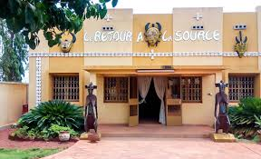

Description et Historique

Historique
Ce musée a éte crée en 1990 pour préserver et valoriser le patrimoine culturel sénoufo dans la région de Bobo-Diuolasso.
Description
Le centre et musée sénoufo de Bobo-Dioulasso est un espace culturel qui présente les traditions et savoir faire du peuple sénoufo.